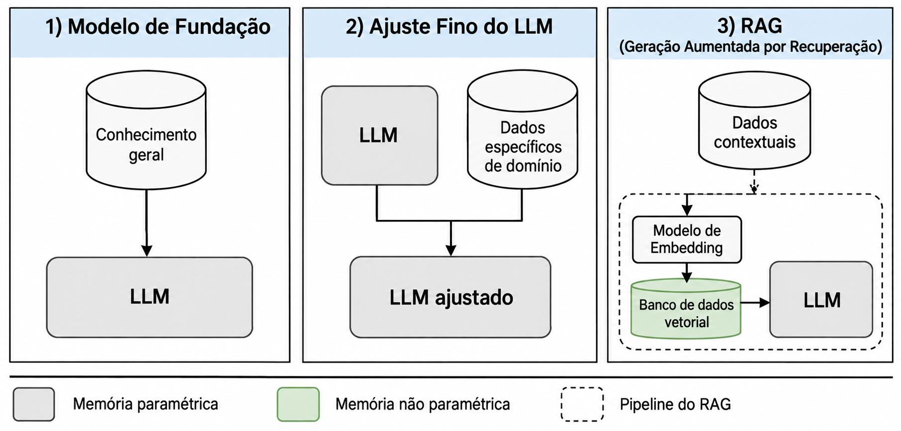
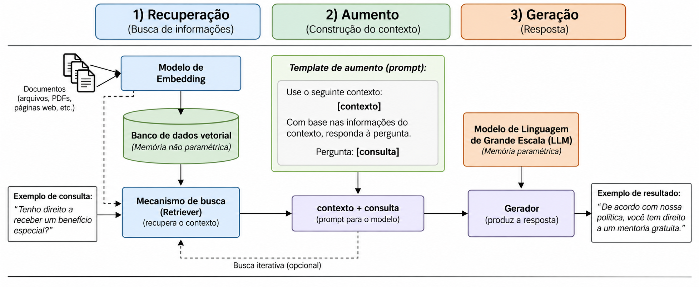
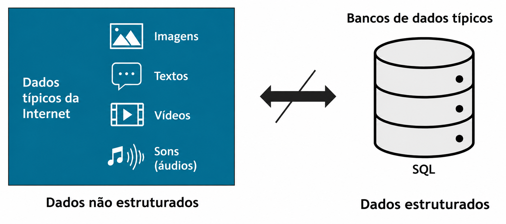
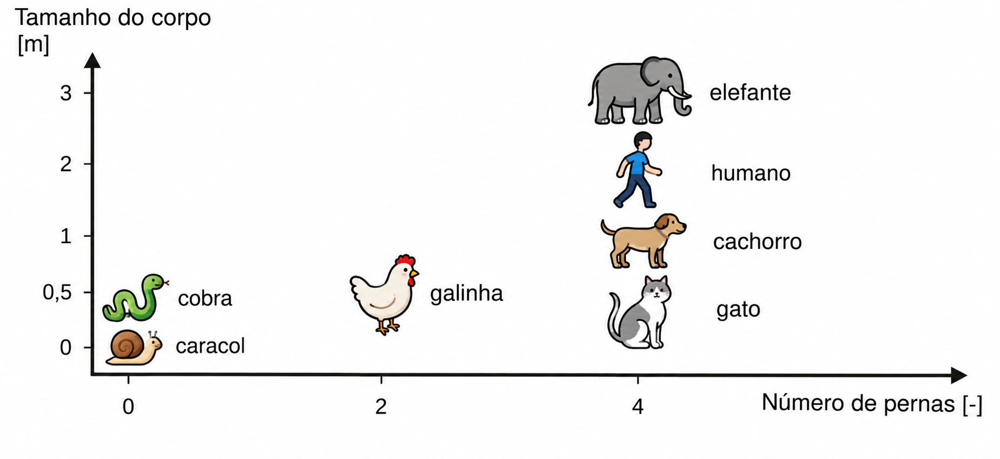
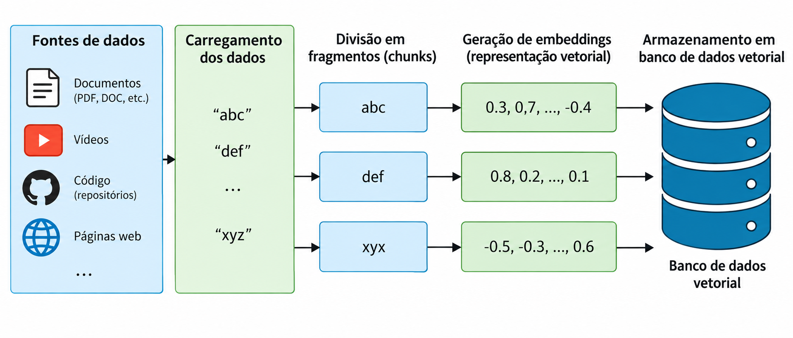
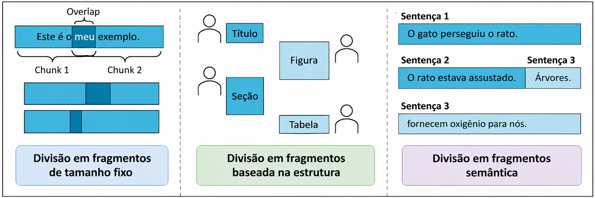
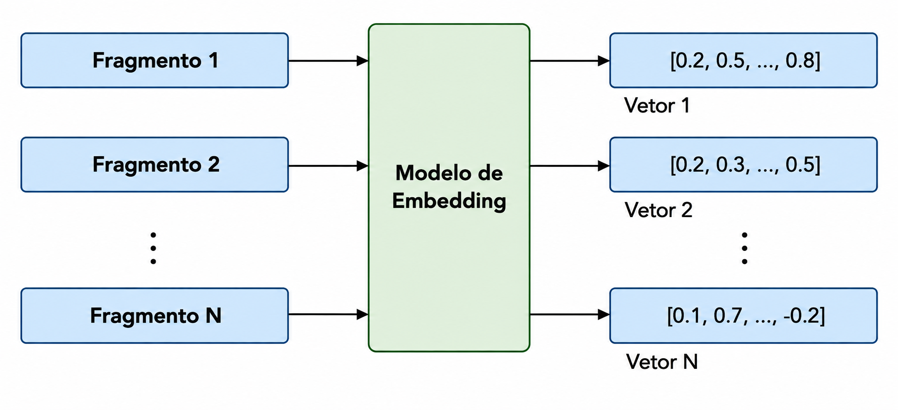
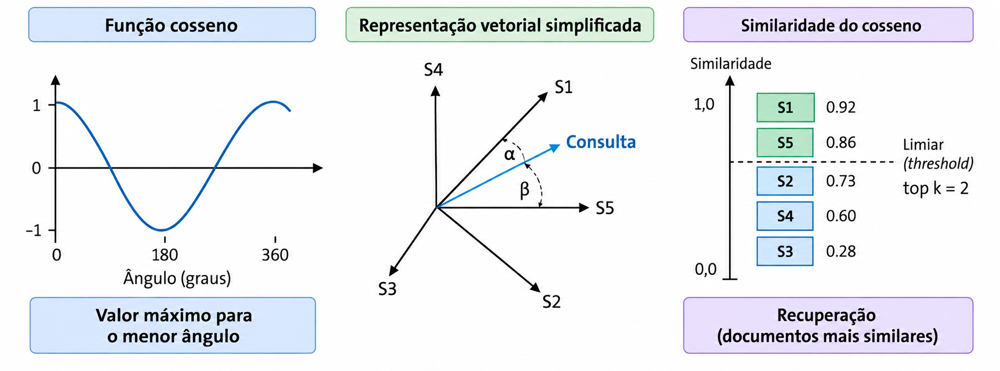
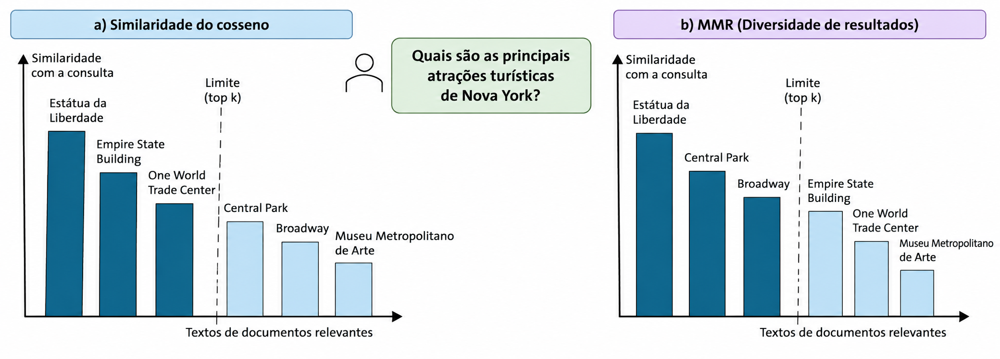

Unidade 4 — Fundamentos de RAG
Disciplina: Aplicações de Modelos de Linguagem Natural
1. Introdução
A necessidade de acessar informação é um aspecto fundamental da atividade humana, e as empresas são particularmente afetadas por isso: elas têm grandes volumes de dados disponíveis, e seus funcionários precisam acessá-los. Infelizmente, os sistemas de busca corporativos atuais não atendem bem a essa necessidade.
Agentes conversacionais baseados em LLMs revolucionaram a forma de acessar informação, oferecendo duas vantagens em relação aos sistemas corporativos tradicionais: primeiro, permitem que o usuário faça perguntas em linguagem natural e receba respostas igualmente conversacionais; segundo, são cada vez mais capazes de lidar com tarefas de busca complexas, facilitando a resolução de problemas e a tomada de decisão. Por exemplo, pessoas já usam agentes conversacionais para obter receitas culinárias, resolver tarefas de química e problemas de geometria.
Nas organizações, a necessidade de informação costuma estar relacionada a dados internos que normalmente não estão disponíveis na internet, por exemplo, um resumo de uma análise de requisitos ou detalhes de um contrato. Como é pouco provável que um LLM "puro" (sem nenhum tipo de adaptação) tenha usado esses dados específicos durante seu treinamento, as respostas geradas para esse tipo de pergunta tendem a ser pouco confiáveis. De forma mais geral, os LLMs às vezes geram respostas sem nenhuma base factual, um fenômeno chamado de alucinação.
A Geração Aumentada por Recuperação (Retrieval-Augmented Generation, RAG) foi proposta como um novo framework de IA que busca integrar conhecimento adicional, como dados organizacionais, e gerar respostas que possam ser vinculadas a esse conhecimento. Isso permite que os usuários acessem informações internas da organização e reduz o risco de alucinações. Essa nova arquitetura representa um avanço importante em relação às arquiteturas anteriores.
2. Geração Aumentada por Recuperação (RAG)
A ideia central do RAG é combinar a capacidade generativa dos LLMs com conhecimento externo recuperado de uma base de dados separada (por exemplo, uma base de dados organizacional). Lewis et al. (2020) cunharam o termo "Retrieval-Augmented Generation (RAG)" e propuseram um framework geral que combina a força da memória paramétrica pré-treinada (o próprio LLM) com uma memória não paramétrica (uma base de dados separada), como uma nova forma de melhorar o desempenho em tarefas que exigem muito conhecimento.
- Memória paramétrica: é a informação armazenada nos parâmetros de um modelo. Em vez de armazenar diretamente dados prontos e significativos, a memória paramétrica guarda parâmetros do modelo que podem ser usados posteriormente para regenerar informação. Quanto mais parâmetros um modelo tem, mais informação ele consegue representar fielmente, por isso os modelos atuais costumam incluir o número de parâmetros no próprio nome (por exemplo, o Mistral 7B tem sete bilhões de parâmetros). É importante notar que a memória paramétrica só contém informação que foi fornecida durante o treinamento.
- Memória não paramétrica (ou memória externa): é informação que fica fora do modelo, por exemplo, informação vinda de uma base de dados. Por isso, essa informação é independente das limitações do modelo. Em outras palavras, a memória não paramétrica permite integrar conhecimento que não foi usado durante o processo de treinamento, por exemplo, usar documentos de política interna de uma empresa para melhorar o desempenho de um sistema de perguntas frequentes (FAQ).
Para entender melhor o RAG, é útil compará-lo com outras duas formas de adaptar um LLM a um contexto específico (Figura 1):

- Modelo de fundação (foundation model): todos os dados de treinamento resultam em um LLM e passam a fazer parte do modelo paramétrico. Em geral, os modelos são treinados com enormes corpora de texto da internet. A criação e o treinamento de um modelo de fundação exigem recursos e infraestrutura massivos, o que só é viável para organizações muito grandes mas, uma vez criados, muitos desses modelos ficam disponíveis como serviço para qualquer pessoa usar. Modelos de fundação são bem equipados para uma ampla variedade de aplicações que não dependem de dados organizacionais ou privados.
- Ajuste fino do LLM (fine-tuning): dados adicionais e específicos de um domínio (como documentos internos de uma empresa) são usados para atualizar os parâmetros do LLM, o que melhora seu desempenho para as tarefas e o domínio específicos em questão. O ajuste fino é menos custoso e exige menos recursos do que treinar um modelo de fundação do zero, o que permite que organizações menores e até indivíduos ajustem modelos de fundação para um contexto específico, por exemplo, treinar um modelo capaz de responder perguntas específicas do domínio da agricultura.
- RAG: uma base de dados separada, com informação vetorial (embeddings), é criada a partir de um modelo de embeddings e de dados contextuais. Essa parte separada é a memória não paramétrica. Esse banco de dados vetorial é usado para "aumentar" a entrada do LLM e assim melhorar seu resultado. Criar um banco de dados vetorial é ainda menos custoso, em termos de recursos, do que fazer um ajuste fino. Por isso, com capacidade tecnológica suficiente, essa abordagem é viável para muitas organizações.
Comparação entre as três formas de incorporar conhecimento a um LLM: modelo de fundação, ajuste fino (fine-tuning) e RAG.
2.1 O pipeline RAG
O uso de uma arquitetura RAG resulta em um pipeline (Figura 2) que começa com uma consulta (query) do usuário e termina com um resultado. Entre esses dois pontos, existem três partes fundamentais: recuperação (retrieval), aumento (augmentation) e geração (generation). É importante notar que o aumento é a saída do recuperador (retriever) e, ao mesmo tempo, a entrada do gerador (generator).

- Modelo de embeddings: traduz dados de diferentes modalidades (texto, áudio, imagem ou vídeo) em um vetor numérico. É essencial que o mesmo modelo de embeddings usado para criar o banco de dados vetorial seja também usado para transformar a consulta do usuário em vetor, já que a similaridade entre a consulta e os documentos (ou blocos de texto) da base é medida usando justamente esses vetores.
- Recuperador (retriever): busca a informação mais relevante no banco de dados vetorial, calculando um escore de similaridade entre o vetor da consulta de entrada e os vetores dos documentos armazenados. Como resultado, o recuperador sugere um contexto, que normalmente é uma lista de blocos de texto (chunks) ou documentos recuperados. Na prática mais comum, são selecionados os "top k" resultados (por exemplo, os 5 mais relevantes), ordenados pelo escore de similaridade, uma abordagem também chamada de "princípio de ranqueamento por probabilidade". Por exemplo, se a consulta menciona um cliente específico, os documentos mais relevantes relacionados a esse cliente são incluídos no contexto.
- Aumento (augmentation): o contexto recuperado é usado para gerar uma consulta estendida. Para isso, os LLMs utilizam um tipo de modelo (template) de aumento que define como a consulta original do usuário deve ser combinada com o contexto. Um exemplo simples de modelo de aumento seria instruir o modelo da seguinte forma: "Use o seguinte contexto: [contexto]. Dado o contexto fornecido, responda à pergunta: [pergunta]." A parte [contexto] pode incluir ainda links para os documentos mais relevantes encontrados no banco de dados vetorial.
- Gerador (generator): recebe a consulta já "aumentada" com a informação vinda do banco de dados e gera um novo resultado. Esse processo de geração também pode aproveitar a informação do contexto para fornecer, junto com a resposta, um link para o documento original (por exemplo, um hiperlink para o documento-fonte).
As três etapas fundamentais do pipeline RAG: recuperação, aumento e geração.
3. Banco de Dados Vetoriais
Vimos que o funcionamento do RAG depende diretamente de uma base de dados separada, capaz de armazenar conhecimento externo e de ser consultada de forma eficiente pelo recuperador. Essa base é o banco de dados vetorial. Esta seção é dividida em cinco partes: o que é um banco de dados vetorial, como os documentos são divididos em blocos antes de entrar nele, como esses blocos viram vetores (embeddings), como esses dados são armazenados e, por fim, como são recuperados quando uma consulta chega.
3.1 O que é um Banco de Dados Vetorial
Bancos de dados tradicionais são capazes de armazenar e recuperar dados estruturados, como tabelas com colunas e linhas bem definidas. Mas isso não reflete a grande variedade de formatos de dados encontrados no dia a dia: além de texto, também há imagens, arquivos de áudio e vídeos (Figura 3). Todos esses formatos diferentes precisam ser tratados de forma parecida e armazenados em um mesmo tipo de banco de dados, algo que os bancos de dados tradicionais não fazem bem. Esse é o motivo pelo qual surgiu um novo paradigma: o banco de dados vetorial.

Por que esse novo tipo de banco de dados é chamado de "vetorial"? Porque todos os tipos de dado podem ser representados como vetores. Relembrando a matemática básica: um vetor é uma linha com uma seta, desenhada em um sistema de coordenadas, que pode ser representada por um conjunto de números.
Um exemplo simples: imagine um gráfico bidimensional (Figura 4) que representa seres vivos de acordo com duas características: o número de pernas e o tamanho do corpo. Ao representar a informação dessa forma, é possível perceber o significado semântico dos conceitos: gatos e cachorros, por exemplo, ficam bem próximos nesse espaço, porque têm características parecidas em relação a essas duas dimensões.

Exemplo de mapeamento de conceitos (número de pernas, tamanho do corpo) para vetores numéricos — o chamado embedding vector.
Como seres humanos, conseguimos imaginar um ponto em um espaço bidimensional ou até tridimensional, como no exemplo acima. Mas não conseguimos imaginar um espaço de 768 ou 3.072 dimensões — que é justamente o tamanho típico dos vetores gerados por modelos de embeddings atuais. Computadores, sim, conseguem lidar com esses espaços de altíssima dimensão, o que permite representar o significado semântico de palavras, imagens, sons ou qualquer outro tipo de informação de forma muito mais rica. O aspecto fundamental é que conceitos semanticamente parecidos ficam posicionados mais próximos entre si do que conceitos muito diferentes, e, quanto mais dimensões um algoritmo tem à disposição, melhor tende a ser sua compreensão do significado de uma palavra ou texto.
Usamos línguas como o português ou o inglês para nos comunicar, mas os computadores não trabalham diretamente com essas línguas e sim com o equivalente numérico delas: os chamados vetores de embedding. O processo de traduzir textos legíveis por humanos em vetores é chamado de embedding, que é uma das etapas do processo de ingestão de dados em um banco de dados vetorial.
De forma resumida, sempre que se deseja adicionar dados a um banco de dados vetorial, passa-se por quatro etapas: carregamento dos dados (a partir de uma fonte, como arquivos de texto, páginas web ou outros documentos), divisão em blocos menores (chunking), criação dos embeddings (tradução de cada bloco de texto em um vetor numérico) e, por fim, armazenamento desses pares texto/vetor no banco de dados. As etapas divisão, embeddings e armazenamento, além da recuperação dos dados já armazenados, são detalhadas nas subseções a seguir.

3.2 Divisão de Documentos (Chunking)
Frequentemente é necessário dividir um documento longo em blocos menores (chunks) antes de armazená-lo em um banco de dados vetorial. Essa divisão é importante por três motivos principais: primeiro, blocos menores tendem a conter informação mais focada e relevante, o que melhora a granularidade dos resultados de busca; segundo, ela contorna limitações inerentes aos modelos de embeddings, que só conseguem processar uma quantidade limitada de texto por vez; terceiro, trabalhar e armazenar blocos menores tende a ser mais eficiente em termos de tamanho do banco de dados e de velocidade das consultas.
Para entender a segunda razão, é importante conhecer o conceito de token: um token é a unidade fundamental de texto em processamento de linguagem natural, normalmente uma palavra inteira, parte de uma palavra, ou até um único caractere. O processo de converter uma frase em uma lista de tokens é chamado de tokenização. Por exemplo, a frase "Eu amo IA generativa!" poderia ser tokenizada como ["Eu", "amo", "IA", "generativa", "!"]; em muitos métodos de tokenização, palavras mais longas são quebradas em pedaços menores, por exemplo, "amando" poderia virar ["am", "ando"]. Os tokens permitem que os modelos de IA processem texto convertendo linguagem em representações numéricas; em seguida, na etapa de embedding, esses tokens são transformados em vetores que capturam o significado semântico. Como regra geral, um token equivale a aproximadamente 0,75 palavra (ou seja, 100 tokens correspondem a cerca de 75 palavras, em inglês). Todo modelo de embeddings tem um limite máximo de tokens que consegue processar de uma vez. Esse limite é chamado de janela de contexto (context window); se mais tokens do que esse limite forem enviados, o excesso é simplesmente descartado, perdendo-se o significado dessa parte do texto.
Exemplos de janelas de contexto (limite máximo de tokens) de alguns modelos de embeddings populares.
Existem diferentes abordagens para criar os blocos de texto (chunks). A seguir, apresentamos três das mais utilizadas (Figura 6).

Divisão de tamanho fixo (fixed-size chunking): a abordagem mais simples. O texto é dividido sempre que um número predefinido de caracteres é atingido, com o corte ocorrendo no final da última palavra completa antes de ultrapassar esse limite. A principal vantagem dessa abordagem é a simplicidade, é fácil de entender, de implementar e é rápida, já que não exige nenhuma análise do significado do texto. A principal desvantagem é a falta de sensibilidade ao contexto: frases ou ideias podem ser cortadas no meio, resultando em perda de coerência semântica.
Um recurso importante nessa e em outras abordagens é a sobreposição entre blocos (chunk overlap): a quantidade de texto compartilhada entre dois blocos consecutivos, normalmente medida em caracteres ou tokens. O objetivo da sobreposição é manter o contexto entre os blocos e preservar o significado que, de outra forma, poderia se perder quando o texto é dividido de forma arbitrária. Uma regra geral comum é usar uma sobreposição de 10% a 20% do tamanho do bloco. Embora isso não seja uma regra fixa: dependendo do tipo de texto, mais ou menos sobreposição pode ser adequada.
Divisão baseada na estrutura do documento (structure-based chunking): o significado e a coerência de um texto normalmente não seguem tamanhos fixos, então dividir o texto em pedaços de tamanho igual nem sempre reflete bem a realidade. Uma abordagem mais sofisticada é seguir a própria estrutura do documento, que costuma ser organizado pelo autor em capítulos, parágrafos, frases, partes de frases, palavras, e assim por diante. A ideia é quebrar primeiro o texto em unidades maiores, como capítulos; se o bloco resultante ainda for grande demais, ele é quebrado em unidades menores, como parágrafos, e assim sucessivamente, até respeitar o limite de tamanho definido. Esse tipo de abordagem consegue equilibrar bem a coerência textual com o cumprimento dos limites de tamanho dos blocos.
Exemplo que ilustra por que respeitar a estrutura do texto (e não apenas um tamanho fixo) é importante ao dividir documentos em blocos.
Divisão semântica (semantic chunking): a abordagem mais avançada das três. Primeiro, o texto é dividido em frases individuais; em seguida, cada frase é transformada em um vetor de embedding. A partir desses vetores, calcula-se a similaridade entre frases consecutivas (por meio de uma espécie de matriz de distâncias), e a divisão em blocos é feita justamente nos pontos em que essa similaridade cai de forma expressiva, ou seja, nas "quebras naturais" de assunto dentro do texto. Essa abordagem preserva melhor o significado semântico das frases e mantém conceitos relacionados agrupados no mesmo bloco, o que melhora a qualidade da recuperação de informação; além disso, ela se adapta ao conteúdo do texto, produzindo blocos de tamanhos mais naturais e mais fáceis de entender. Por outro lado, essa abordagem também tem desvantagens: ela exige processamento computacional adicional (é mais lenta), já que depende de rodar um modelo de embeddings sobre o texto, o que tem um custo, seja em tempo de resposta (latência), seja financeiro, seja em complexidade adicional do sistema.
3.3 Embeddings
Depois de carregar e dividir os documentos em blocos, ainda estamos lidando apenas com texto legível por humanos. É preciso traduzir esse texto para uma representação compreensível por máquina (embedding). Nesse processo é chamado cada bloco de texto (chunk) é convertido em um vetor numérico (Figura 7). Um embedding não tem apenas duas ou três dimensões, como nos exemplos didáticos de espaço vetorial vistos anteriormente: ele pode ter centenas ou até milhares de dimensões, o que é necessário para capturar todo o significado do texto.

O conceito de embedding não se limita a textos. Também é possível gerar embeddings de outras modalidades de dado: embeddings de imagem (imagens completas), embeddings de áudio (sons, vozes, músicas), embeddings de vídeo (que combinam sinais de áudio com sequências de imagens), embeddings de grafos (representando nós, arestas e características de um grafo) e embeddings multimodais, em que diferentes modalidades, como texto e imagem, são representadas em um mesmo espaço vetorial compartilhado (um exemplo é o modelo CLIP, da OpenAI, que permite embutir simultaneamente imagens e os textos que as descrevem).
Os embeddings são centrais para a IA Generativa: eles são a base dos LLMs, e tudo o que é construído sobre LLMs depende, em algum nível, deles. Além disso, modelos de processamento de linguagem natural usam embeddings de texto; sistemas de visão computacional usam embeddings para representar o significado de imagens; aplicações de RAG são construídas sobre busca semântica, que depende de embeddings para recuperar de forma eficiente os blocos de texto mais relevantes; e sistemas de recomendação usam embeddings para representar produtos e suas características.
Ao escolher um modelo de embeddings, alguns fatores importantes devem ser considerados: o desempenho do modelo (existem rankings públicos, como o Massive Text Embedding Benchmark, que comparam dezenas de modelos em diferentes tarefas e idiomas); o tamanho do modelo e o uso de memória (caso a intenção seja hospedar o próprio modelo); o tamanho máximo de entrada aceito pelo modelo (é preciso garantir que o tamanho dos blocos de texto fique dentro desse limite); e o custo, muitos modelos são oferecidos como serviço pago via API, enquanto outros são de código aberto e gratuitos, embora hospedá-los localmente exija manter um servidor (com custos de hardware e energia). A vantagem de hospedar o próprio modelo é evitar que os dados da organização saiam de sua própria rede, o que pode ser importante em cenários com restrições de privacidade.
Um conceito fundamental por trás dos modelos de embedding é que o significado de uma palavra é definido pelo contexto em que ela é usada. Essa é a ideia central por trás do algoritmo skip-gram, que deu origem ao Word2vec, um dos primeiros e mais influentes modelos de embedding de palavras (desenvolvido pelo Google em 2013). Depois dele vieram outros modelos importantes: o GloVe (Universidade de Stanford, 2014, com desempenho comparável ao Word2vec), o FastText (Facebook/Meta, 2016, capaz de lidar até com palavras fora do vocabulário de treinamento) e o BERT (Google, 2018, baseado na arquitetura Transformer), que continua sendo um dos modelos de embedding mais populares até hoje.
Um embedding de palavra isolado, porém, tem uma limitação importante: o significado de uma palavra depende do contexto da frase em que ela aparece. Considere as duas frases a seguir, que usam a mesma palavra com sentidos completamente diferentes:
A palavra "banco" tem significados completamente diferentes nas duas frases, o que mostra que um único embedding para essa palavra, isolado de qualquer contexto, não é suficiente.
Por isso, além dos embeddings de palavras isoladas, existem os embeddings de frases (sentence embeddings): em vez de gerar um vetor para cada palavra, o modelo recebe uma frase (ou até um parágrafo) completo e devolve um único vetor que representa o significado da frase inteira. Modelos como variantes do BERT são capazes de processar frases completas dessa forma. Um detalhe interessante é que modelos de embeddings multilíngues conseguem representar o mesmo significado em diferentes idiomas de forma muito próxima no espaço vetorial, ou seja, a mesma frase escrita em português, inglês ou francês tende a gerar vetores muito parecidos entre si, mostrando que esses modelos capturam o significado, não apenas a forma superficial das palavras.
3.4 Armazenamento dos Dados
Depois de carregar os documentos, dividi-los em blocos e gerar os embeddings correspondentes, chega-se à última etapa da ingestão de dados: armazenar esses pares (texto e vetor) em um banco de dados vetorial. A principal decisão a tomar é se o banco de dados vetorial será hospedado localmente (na própria infraestrutura da organização) ou se será utilizado um serviço de nuvem gerenciado por terceiros. Cada abordagem tem vantagens e desvantagens.
Alguns critérios importantes para escolher um banco de dados vetorial:
- Localização: alguns bancos de dados vetoriais armazenam os dados localmente (por exemplo, o Chroma, uma opção de código aberto que pode rodar na própria máquina), enquanto outros são oferecidos como serviços de nuvem (por exemplo, Pinecone ou Weaviate).
- Proteção de dados: dependendo do tipo de dado e do cliente envolvido, os dados podem ser altamente sensíveis, o que pode levar à necessidade de evitar serviços online ou determinadas regiões geográficas. Nesses casos, um banco de dados vetorial local pode ser preferível a um serviço em nuvem.
- Preço: embora bancos de dados vetoriais locais e de código aberto sejam gratuitos, é necessário manter um servidor próprio, equipado com hardware adequado para gerar embeddings rapidamente , ou seja, trocam-se custos variáveis (pagos a um serviço de nuvem) por custos fixos mais altos (manter a própria infraestrutura).
- Desempenho versus velocidade: existe um equilíbrio clássico entre os dois, em geral, melhor desempenho (qualidade dos resultados) está correlacionado a espaços de embedding maiores, o que torna mais lentas tanto a inserção/atualização de dados quanto as consultas ao banco.
3.5 Recuperação de Dados
Para recuperar informação de um banco de dados vetorial, é preciso entender como ele encontra os documentos relevantes. Diferentemente dos bancos de dados estruturados tradicionais, que sempre buscam correspondências exatas, um banco de dados vetorial busca os documentos mais relevantes para uma consulta, não necessariamente uma correspondência perfeita. Duas abordagens de similaridade são especialmente importantes: a similaridade de cosseno e a Relevância de Margem Máxima (Maximum Margin Relevance, MMR).
Similaridade de cosseno: o valor do cosseno é máximo quando o ângulo entre dois vetores está próximo de zero. Em um sistema de coordenadas, dois vetores que apontam praticamente na mesma direção têm um ângulo interno próximo de zero e, por isso, são considerados similares; se apontam em direções completamente opostas, são considerados o mais diferentes possível. A similaridade de cosseno sempre resulta em um valor entre −1 e +1. Embora o espaço de embeddings tenha muito mais do que duas dimensões, o mesmo princípio se aplica: o processo de recuperação segue três passos: (1) calcular o ângulo (e o valor de cosseno correspondente) entre o vetor da consulta e o vetor de cada documento (ou bloco de texto) armazenado; (2) ordenar os documentos em ordem decrescente de similaridade; e (3) retornar os "top k" resultados, por exemplo, apenas os 2 ou os 5 documentos mais similares à consulta (Figura 8).

A similaridade de cosseno ajuda a encontrar os documentos mais relevantes, mas em alguns casos isso não é suficiente e é aí que entra a Relevância de Margem Máxima (MMR), uma técnica que busca maximizar não apenas a relevância, mas também a diversidade dos documentos retornados.
Exemplo que ilustra a diferença entre buscar apenas pela similaridade de cosseno e usar a MMR: a MMR evita retornar vários resultados muito parecidos entre si, mesmo que individualmente bastante relevantes para a consulta.
O funcionamento da MMR depende de um hiperparâmetro chamado λ (lambda), que varia entre 0 e 1: o valor 0 faz a busca retornar apenas os resultados mais relevantes (equivalente à similaridade de cosseno pura), enquanto o valor 1 retorna os resultados mais diversos possíveis, mesmo que um pouco menos relevantes individualmente. Um valor de λ = 0.5 costuma ser um bom ponto de partida, equilibrando relevância e diversidade. Na Figura 9 é possível visualizar uma comparação entre buscar apenas pela similaridade de cosseno (que pode retornar vários resultados parecidos entre si) e usar a MMR (que privilegia também a diversidade dos resultados retornados).

Com isso, fechamos os fundamentos conceituais do RAG e dos bancos de dados vetoriais: entendemos por que os LLMs sozinhos têm limitações de acesso a conhecimento, como o pipeline de recuperação, aumento e geração resolve parte desse problema, e como um banco de dados vetorial é construído e consultado, da divisão dos documentos em blocos até a recuperação final por similaridade. A implementação prática completa de um pipeline RAG, já com código e carregando documentos reais, gerando embeddings, montando um banco de dados vetorial e conectando tudo a um LLM será o tema da Unidade 5.
4. Referências
- KLESEL, M.; WITTMANN, H. F. Retrieval-Augmented Generation (RAG). Business & Information Systems Engineering, v. 67, n. 4, p. 551–561, 2025. DOI: 10.1007/s12599-025-00945-3. (fonte principal das Seções 1 e 2.1 usadas neste material)
- GOLLNICK, B. Generative AI with Python: The Developer's Guide to Pretrained LLMs, Vector Databases, Retrieval Augmented Generation, and Agentic Systems. Boston: Rheinwerk Publishing, 2025. Capítulo 5: Vector Databases. ISBN 978-1-4932-2690-0. (fonte principal do conteúdo sobre bancos de dados vetoriais usado neste material)
- LEWIS, P.; PEREZ, E.; PIKTUS, A.; PETRONI, F.; KARPUKHIN, V.; GOYAL, N.; KÜTTLER, H.; LEWIS, M.; YIH, W.; ROCKTÄSCHEL, T.; RIEDEL, S.; KIELA, D. Retrieval-augmented generation for knowledge-intensive NLP tasks. In: Proceedings of the 34th International Conference on Neural Information Processing Systems (NeurIPS 2020). Red Hook: Curran Associates, 2020. p. 9459–9474. (artigo original que propôs e batizou a técnica RAG, citado como fonte primária em KLESEL & WITTMANN, 2025)